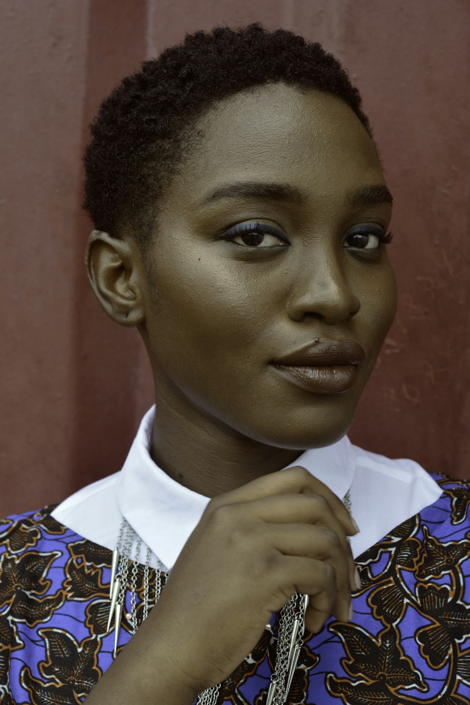

首席导师 · 艺术领路人
舞台上的演奏家，讲台上的引路人

张奕
钢琴 · 艺术总监
上海音乐学院钢琴系硕士、柏林艺术大学访问学者。曾获中国音乐金钟奖，学员屡获国内外钢琴赛事金奖。
🎓 教龄18年🏅 英皇考官

陈曦
小提琴 · 室内乐主任
中央音乐学院硕士，原中国爱乐乐团副首席。多次担任国内外弦乐比赛评委，其学生考入柯蒂斯、新英格兰等名校。
🎓 教龄15年🏅 国际比赛评委
林清
声乐 · 流行演唱
伯克利音乐学院毕业，活跃于爵士音乐节。擅长SLS唱法教学，指导学员登上《中国好声音》舞台。
🎓 教龄12年🏅 明星导师
黄骏
电吉他/指弹吉他
知名乐手，Fender品牌合作艺术家。参与录制《我是歌手》现场吉他手，擅长摇滚、Fusion风格教学。
🎓 教龄14年🏅 演唱会乐手
李舒
大提琴 · 低音提琴
上海音乐学院博士，上海歌剧院大提琴声部首席。多次出访欧洲交流演出，学员考入德国汉斯·艾斯勒音乐学院。
🎓 教龄16年🏅 国际比赛获奖

王雷
爵士鼓 · 拉丁打击乐
上海音乐学院现代器乐系教师，IPEA国际打击乐比赛评委。编写多套爵士鼓考级教材，学生遍布各大音乐学院。
🎓 教龄20年🏅 教材主编
为什么选择我们的导师？
不仅是教音乐，更是传递音乐家的思维
🎯
舞台经验
所有导师保持每年至少10场演出，把最新的舞台经验带回课堂。
📚
自主研发教材
结合国际体系与本土学员特点，教学法科学且有趣。
👥
双师制辅导
主课老师+助教练习课，确保每周练习问题及时解决。
🎓
升学/考级规划
导师均为国内外考级评委或音乐学院校友，精准指导升学。
名师 · 育人故事
听听导师们的教学理念与学员成长
张奕 · 钢琴
"音乐是情感的语言"
"我有个学生刚来时特别内向，通过即兴演奏慢慢打开自己，现在能自信地在音乐厅独奏。每个孩子都有自己的音乐密码。"
林清 · 声乐
"流行演唱不只有技巧"
"教过最年长的学生62岁，退休后开始学唱歌，现在在社区合唱团担任领唱。唱歌是每个人都拥有的权利。"
陈曦 · 小提琴
"乐团思维培养合作"
"我的学生组了一个弦乐四重奏，去年获得上海国际青少年室内乐比赛一等奖。看到他们享受合奏，比拿奖更开心。"